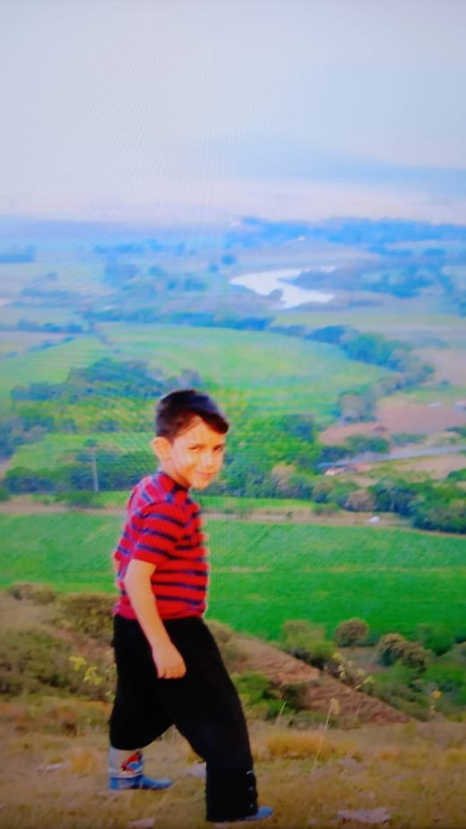
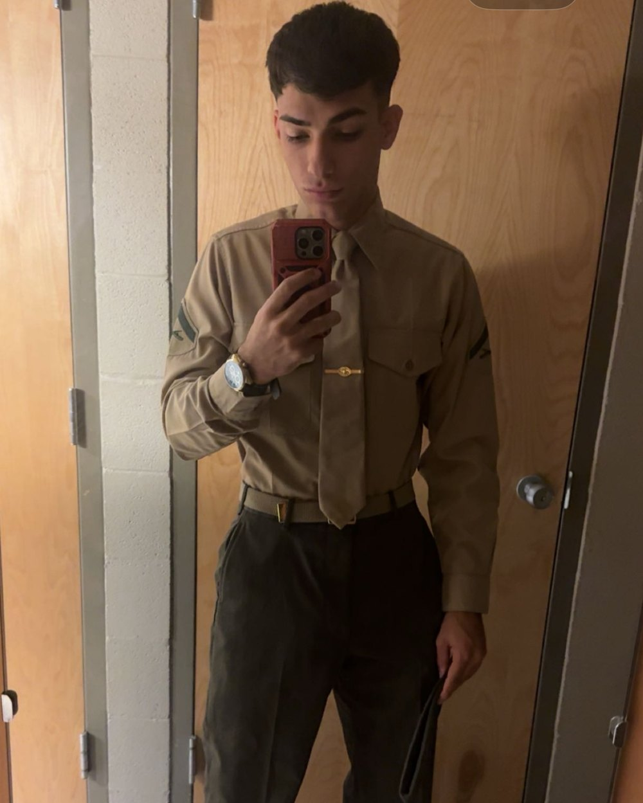

MY STORY · SANTILOPO
From love, to the system, to freedom.
SANTIago LOpez POsada · Mentor, Market Movers

Growing up in Colombia

The Marine Corps

Building my own path
I'm Colombian-American. I grew up in a family that didn't have much money, but we had something far more valuable: love. The people who raised me taught me to appreciate life, love others, and see the beauty in the world.
Growing up in Colombia, I witnessed how difficult it was for people to escape poverty. I saw a system where the poor struggled to get ahead while the wealthy continued building wealth. But I didn't fully understand how deeply that system worked until I moved to the United States and joined the Marine Corps.
The military taught me discipline, responsibility, and resilience. But it also made me question the life I was building. From my perspective, you were paid enough to live comfortably and enjoy yourself, but not necessarily enough to achieve true financial independence. So people reenlist because it's the easiest option, and it turns into a cycle of slavery to a government instead of freedom for yourself.
I knew I wanted something different.
I realized that before I could change anyone else's life, I needed to change my own. So I began educating myself, studying different opportunities, and learning skills that could eventually give me control over my time and financial future.
One of those skills was trading.
On September 25, 2026, I failed my first prop firm evaluation after hitting the maximum loss limit. Instead of walking away, I started grinding harder: studying how the markets actually moved, learning from my mistakes, and developing a more structured approach.
Since then, I've passed six $25,000 evaluations and received two verified payouts from real prop firms.
But that progress wasn't free.
I've invested $5,500 in this journey: $4,300 in trading courses and another $1,200 in prop firm evaluations. I've experienced losses, made mistakes, and spent countless hours learning a skill that demands patience, discipline, and consistency.
Today, I've moved away from prop firm evaluations and trade live using my own capital. I want to build a track record that belongs entirely to me, with my own money, my own decisions, and my own results.
The evaluation strategy I developed is still included in the course, and you can see documentation of my trading milestones in the Receipts section of the main page.
But my goal has never been just about making money.
I want to take the love and opportunities I was given growing up and bring them back to the people around me. I want to share what I've learned, help others develop valuable skills, and give people the knowledge to pursue financial independence on their own terms.
That's why I'm part of Market Movers.
Because for me, financial freedom isn't just about how much money you make. It's about having the freedom to decide what you do with your life.
“There's nothing more sad than wasted potential. Live to prove yourself right, not others.”